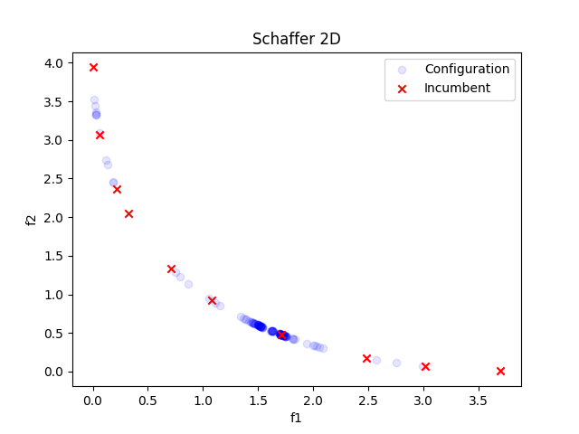

Note
Go to the end to download the full example code or to run this example in your browser via Binder
2D Schaffer Function with Objective Weights¶
A simple example on how to use multi-objective optimization is shown. The 2D Schaffer function is used. In the plot you can see that all points are on the Pareto front. However, since we set the objective weights, you can notice that SMAC prioritizes the second objective over the first one.
[INFO][abstract_initial_design.py:147] Using 10 initial design configurations and 0 additional configurations.
[INFO][abstract_intensifier.py:305] Using only one seed for deterministic scenario.
[INFO][abstract_intensifier.py:515] Added config 8a8909 as new incumbent because there are no incumbents yet.
[INFO][abstract_intensifier.py:598] Config 3a64dd is a new incumbent. Total number of incumbents: 2.
[INFO][abstract_intensifier.py:598] Config c865cf is a new incumbent. Total number of incumbents: 3.
[INFO][abstract_intensifier.py:598] Config 9c7523 is a new incumbent. Total number of incumbents: 4.
[INFO][abstract_intensifier.py:598] Config 1c02c1 is a new incumbent. Total number of incumbents: 5.
[INFO][abstract_intensifier.py:598] Config 555ee4 is a new incumbent. Total number of incumbents: 6.
[INFO][abstract_intensifier.py:598] Config a21a9d is a new incumbent. Total number of incumbents: 7.
[INFO][abstract_intensifier.py:598] Config 726247 is a new incumbent. Total number of incumbents: 8.
[INFO][abstract_intensifier.py:598] Config 15d504 is a new incumbent. Total number of incumbents: 9.
[INFO][abstract_intensifier.py:598] Config 2b6ad4 is a new incumbent. Total number of incumbents: 10.
[INFO][abstract_intensifier.py:598] Config 914391 is a new incumbent. Total number of incumbents: 11.
[INFO][abstract_intensifier.py:623] Removed one incumbent using crowding distance because more than 10 are available.
[INFO][abstract_intensifier.py:598] Config bf8bea is a new incumbent. Total number of incumbents: 11.
[INFO][abstract_intensifier.py:623] Removed one incumbent using crowding distance because more than 10 are available.
[INFO][abstract_intensifier.py:598] Config d05e80 is a new incumbent. Total number of incumbents: 11.
[INFO][abstract_intensifier.py:623] Removed one incumbent using crowding distance because more than 10 are available.
[INFO][abstract_intensifier.py:598] Config df4cbd is a new incumbent. Total number of incumbents: 11.
[INFO][abstract_intensifier.py:623] Removed one incumbent using crowding distance because more than 10 are available.
[INFO][abstract_intensifier.py:598] Config 8ba166 is a new incumbent. Total number of incumbents: 11.
[INFO][abstract_intensifier.py:623] Removed one incumbent using crowding distance because more than 10 are available.
[INFO][abstract_intensifier.py:598] Config a50db0 is a new incumbent. Total number of incumbents: 11.
[INFO][abstract_intensifier.py:623] Removed one incumbent using crowding distance because more than 10 are available.
[INFO][abstract_intensifier.py:598] Config 346c91 is a new incumbent. Total number of incumbents: 11.
[INFO][abstract_intensifier.py:623] Removed one incumbent using crowding distance because more than 10 are available.
[INFO][abstract_intensifier.py:598] Config c40dc1 is a new incumbent. Total number of incumbents: 11.
[INFO][abstract_intensifier.py:623] Removed one incumbent using crowding distance because more than 10 are available.
[INFO][abstract_intensifier.py:598] Config 003ffb is a new incumbent. Total number of incumbents: 11.
[INFO][abstract_intensifier.py:623] Removed one incumbent using crowding distance because more than 10 are available.
[INFO][abstract_intensifier.py:598] Config 54cbf0 is a new incumbent. Total number of incumbents: 11.
[INFO][abstract_intensifier.py:623] Removed one incumbent using crowding distance because more than 10 are available.
[INFO][abstract_intensifier.py:598] Config 478ad0 is a new incumbent. Total number of incumbents: 11.
[INFO][abstract_intensifier.py:623] Removed one incumbent using crowding distance because more than 10 are available.
[INFO][abstract_intensifier.py:598] Config 74f0dd is a new incumbent. Total number of incumbents: 11.
[INFO][abstract_intensifier.py:623] Removed one incumbent using crowding distance because more than 10 are available.
[INFO][abstract_intensifier.py:598] Config ab860b is a new incumbent. Total number of incumbents: 11.
[INFO][abstract_intensifier.py:623] Removed one incumbent using crowding distance because more than 10 are available.
[INFO][abstract_intensifier.py:598] Config 460755 is a new incumbent. Total number of incumbents: 11.
[INFO][abstract_intensifier.py:623] Removed one incumbent using crowding distance because more than 10 are available.
[INFO][abstract_intensifier.py:598] Config d94cdf is a new incumbent. Total number of incumbents: 11.
[INFO][abstract_intensifier.py:623] Removed one incumbent using crowding distance because more than 10 are available.
[INFO][abstract_intensifier.py:598] Config 178c1b is a new incumbent. Total number of incumbents: 11.
[INFO][abstract_intensifier.py:623] Removed one incumbent using crowding distance because more than 10 are available.
[INFO][abstract_intensifier.py:598] Config e7e8b7 is a new incumbent. Total number of incumbents: 11.
[INFO][abstract_intensifier.py:623] Removed one incumbent using crowding distance because more than 10 are available.
[INFO][abstract_intensifier.py:598] Config 85de3f is a new incumbent. Total number of incumbents: 11.
[INFO][abstract_intensifier.py:623] Removed one incumbent using crowding distance because more than 10 are available.
[INFO][abstract_intensifier.py:598] Config e837bf is a new incumbent. Total number of incumbents: 11.
[INFO][abstract_intensifier.py:623] Removed one incumbent using crowding distance because more than 10 are available.
[INFO][abstract_intensifier.py:598] Config 2c9ff3 is a new incumbent. Total number of incumbents: 11.
[INFO][abstract_intensifier.py:623] Removed one incumbent using crowding distance because more than 10 are available.
[INFO][abstract_intensifier.py:598] Config df9292 is a new incumbent. Total number of incumbents: 11.
[INFO][abstract_intensifier.py:623] Removed one incumbent using crowding distance because more than 10 are available.
[INFO][abstract_intensifier.py:598] Config b3f2de is a new incumbent. Total number of incumbents: 11.
[INFO][abstract_intensifier.py:623] Removed one incumbent using crowding distance because more than 10 are available.
[INFO][abstract_intensifier.py:598] Config 7d5595 is a new incumbent. Total number of incumbents: 11.
[INFO][abstract_intensifier.py:623] Removed one incumbent using crowding distance because more than 10 are available.
[INFO][abstract_intensifier.py:598] Config b9185b is a new incumbent. Total number of incumbents: 11.
[INFO][abstract_intensifier.py:623] Removed one incumbent using crowding distance because more than 10 are available.
[INFO][abstract_intensifier.py:598] Config b90a99 is a new incumbent. Total number of incumbents: 11.
[INFO][abstract_intensifier.py:623] Removed one incumbent using crowding distance because more than 10 are available.
[INFO][abstract_intensifier.py:598] Config e4a69b is a new incumbent. Total number of incumbents: 11.
[INFO][abstract_intensifier.py:623] Removed one incumbent using crowding distance because more than 10 are available.
[INFO][abstract_intensifier.py:598] Config 4816bf is a new incumbent. Total number of incumbents: 11.
[INFO][abstract_intensifier.py:623] Removed one incumbent using crowding distance because more than 10 are available.
[INFO][abstract_intensifier.py:598] Config 4558f3 is a new incumbent. Total number of incumbents: 11.
[INFO][abstract_intensifier.py:623] Removed one incumbent using crowding distance because more than 10 are available.
[INFO][abstract_intensifier.py:598] Config b50fcc is a new incumbent. Total number of incumbents: 11.
[INFO][abstract_intensifier.py:623] Removed one incumbent using crowding distance because more than 10 are available.
[INFO][abstract_intensifier.py:598] Config 1dc67b is a new incumbent. Total number of incumbents: 11.
[INFO][abstract_intensifier.py:623] Removed one incumbent using crowding distance because more than 10 are available.
[INFO][abstract_intensifier.py:598] Config 74d2ac is a new incumbent. Total number of incumbents: 11.
[INFO][abstract_intensifier.py:623] Removed one incumbent using crowding distance because more than 10 are available.
[INFO][abstract_intensifier.py:598] Config 6955fb is a new incumbent. Total number of incumbents: 11.
[INFO][abstract_intensifier.py:623] Removed one incumbent using crowding distance because more than 10 are available.
[INFO][abstract_intensifier.py:598] Config 977060 is a new incumbent. Total number of incumbents: 11.
[INFO][abstract_intensifier.py:623] Removed one incumbent using crowding distance because more than 10 are available.
[INFO][abstract_intensifier.py:598] Config b0a618 is a new incumbent. Total number of incumbents: 11.
[INFO][abstract_intensifier.py:623] Removed one incumbent using crowding distance because more than 10 are available.
[INFO][abstract_intensifier.py:598] Config 4e6b25 is a new incumbent. Total number of incumbents: 11.
[INFO][abstract_intensifier.py:623] Removed one incumbent using crowding distance because more than 10 are available.
[INFO][abstract_intensifier.py:598] Config ce64ab is a new incumbent. Total number of incumbents: 11.
[INFO][abstract_intensifier.py:623] Removed one incumbent using crowding distance because more than 10 are available.
[INFO][abstract_intensifier.py:598] Config 85f2cf is a new incumbent. Total number of incumbents: 11.
[INFO][abstract_intensifier.py:623] Removed one incumbent using crowding distance because more than 10 are available.
[INFO][abstract_intensifier.py:598] Config 003f9a is a new incumbent. Total number of incumbents: 11.
[INFO][abstract_intensifier.py:623] Removed one incumbent using crowding distance because more than 10 are available.
[INFO][abstract_intensifier.py:598] Config af0c3f is a new incumbent. Total number of incumbents: 11.
[INFO][abstract_intensifier.py:623] Removed one incumbent using crowding distance because more than 10 are available.
[INFO][abstract_intensifier.py:598] Config 36e58e is a new incumbent. Total number of incumbents: 11.
[INFO][abstract_intensifier.py:623] Removed one incumbent using crowding distance because more than 10 are available.
[INFO][smbo.py:319] Finished 50 trials.
[INFO][abstract_intensifier.py:598] Config 993356 is a new incumbent. Total number of incumbents: 11.
[INFO][abstract_intensifier.py:623] Removed one incumbent using crowding distance because more than 10 are available.
[INFO][abstract_intensifier.py:598] Config 094fd4 is a new incumbent. Total number of incumbents: 11.
[INFO][abstract_intensifier.py:623] Removed one incumbent using crowding distance because more than 10 are available.
[INFO][abstract_intensifier.py:598] Config 3ff59b is a new incumbent. Total number of incumbents: 11.
[INFO][abstract_intensifier.py:623] Removed one incumbent using crowding distance because more than 10 are available.
[INFO][abstract_intensifier.py:598] Config 36ae0d is a new incumbent. Total number of incumbents: 11.
[INFO][abstract_intensifier.py:623] Removed one incumbent using crowding distance because more than 10 are available.
[INFO][abstract_intensifier.py:598] Config ecb618 is a new incumbent. Total number of incumbents: 11.
[INFO][abstract_intensifier.py:623] Removed one incumbent using crowding distance because more than 10 are available.
[INFO][abstract_intensifier.py:598] Config 0f8a3a is a new incumbent. Total number of incumbents: 11.
[INFO][abstract_intensifier.py:623] Removed one incumbent using crowding distance because more than 10 are available.
[INFO][abstract_intensifier.py:598] Config 6962d0 is a new incumbent. Total number of incumbents: 11.
[INFO][abstract_intensifier.py:623] Removed one incumbent using crowding distance because more than 10 are available.
[INFO][abstract_intensifier.py:598] Config 782459 is a new incumbent. Total number of incumbents: 11.
[INFO][abstract_intensifier.py:623] Removed one incumbent using crowding distance because more than 10 are available.
[INFO][abstract_intensifier.py:598] Config 80e42c is a new incumbent. Total number of incumbents: 11.
[INFO][abstract_intensifier.py:623] Removed one incumbent using crowding distance because more than 10 are available.
[INFO][abstract_intensifier.py:598] Config 1869d6 is a new incumbent. Total number of incumbents: 11.
[INFO][abstract_intensifier.py:623] Removed one incumbent using crowding distance because more than 10 are available.
[INFO][abstract_intensifier.py:598] Config 456310 is a new incumbent. Total number of incumbents: 11.
[INFO][abstract_intensifier.py:623] Removed one incumbent using crowding distance because more than 10 are available.
[INFO][abstract_intensifier.py:598] Config 0021ff is a new incumbent. Total number of incumbents: 11.
[INFO][abstract_intensifier.py:623] Removed one incumbent using crowding distance because more than 10 are available.
[INFO][abstract_intensifier.py:598] Config ea381b is a new incumbent. Total number of incumbents: 11.
[INFO][abstract_intensifier.py:623] Removed one incumbent using crowding distance because more than 10 are available.
[INFO][abstract_intensifier.py:598] Config 41b92b is a new incumbent. Total number of incumbents: 11.
[INFO][abstract_intensifier.py:623] Removed one incumbent using crowding distance because more than 10 are available.
[INFO][abstract_intensifier.py:598] Config 57f079 is a new incumbent. Total number of incumbents: 11.
[INFO][abstract_intensifier.py:623] Removed one incumbent using crowding distance because more than 10 are available.
[INFO][abstract_intensifier.py:598] Config 25cbd8 is a new incumbent. Total number of incumbents: 11.
[INFO][abstract_intensifier.py:623] Removed one incumbent using crowding distance because more than 10 are available.
[INFO][abstract_intensifier.py:598] Config 95052f is a new incumbent. Total number of incumbents: 11.
[INFO][abstract_intensifier.py:623] Removed one incumbent using crowding distance because more than 10 are available.
[INFO][abstract_intensifier.py:598] Config 70707c is a new incumbent. Total number of incumbents: 11.
[INFO][abstract_intensifier.py:623] Removed one incumbent using crowding distance because more than 10 are available.
[INFO][abstract_intensifier.py:598] Config f6e131 is a new incumbent. Total number of incumbents: 11.
[INFO][abstract_intensifier.py:623] Removed one incumbent using crowding distance because more than 10 are available.
[INFO][abstract_intensifier.py:598] Config e1cf58 is a new incumbent. Total number of incumbents: 11.
[INFO][abstract_intensifier.py:623] Removed one incumbent using crowding distance because more than 10 are available.
[INFO][abstract_intensifier.py:598] Config 584c42 is a new incumbent. Total number of incumbents: 11.
[INFO][abstract_intensifier.py:623] Removed one incumbent using crowding distance because more than 10 are available.
[INFO][abstract_intensifier.py:598] Config 047685 is a new incumbent. Total number of incumbents: 11.
[INFO][abstract_intensifier.py:623] Removed one incumbent using crowding distance because more than 10 are available.
[INFO][abstract_intensifier.py:598] Config b67a4d is a new incumbent. Total number of incumbents: 11.
[INFO][abstract_intensifier.py:623] Removed one incumbent using crowding distance because more than 10 are available.
[INFO][abstract_intensifier.py:598] Config 1e8dd4 is a new incumbent. Total number of incumbents: 11.
[INFO][abstract_intensifier.py:623] Removed one incumbent using crowding distance because more than 10 are available.
[INFO][abstract_intensifier.py:598] Config 65dda4 is a new incumbent. Total number of incumbents: 11.
[INFO][abstract_intensifier.py:623] Removed one incumbent using crowding distance because more than 10 are available.
[INFO][abstract_intensifier.py:598] Config 7a4361 is a new incumbent. Total number of incumbents: 11.
[INFO][abstract_intensifier.py:623] Removed one incumbent using crowding distance because more than 10 are available.
[INFO][abstract_intensifier.py:598] Config 34e57d is a new incumbent. Total number of incumbents: 11.
[INFO][abstract_intensifier.py:623] Removed one incumbent using crowding distance because more than 10 are available.
[INFO][abstract_intensifier.py:598] Config f8de06 is a new incumbent. Total number of incumbents: 11.
[INFO][abstract_intensifier.py:623] Removed one incumbent using crowding distance because more than 10 are available.
[INFO][abstract_intensifier.py:598] Config 27cdd9 is a new incumbent. Total number of incumbents: 11.
[INFO][abstract_intensifier.py:623] Removed one incumbent using crowding distance because more than 10 are available.
[INFO][abstract_intensifier.py:598] Config 71481f is a new incumbent. Total number of incumbents: 11.
[INFO][abstract_intensifier.py:623] Removed one incumbent using crowding distance because more than 10 are available.
[INFO][abstract_intensifier.py:598] Config 63da18 is a new incumbent. Total number of incumbents: 11.
[INFO][abstract_intensifier.py:623] Removed one incumbent using crowding distance because more than 10 are available.
[INFO][abstract_intensifier.py:598] Config 8ffcf3 is a new incumbent. Total number of incumbents: 11.
[INFO][abstract_intensifier.py:623] Removed one incumbent using crowding distance because more than 10 are available.
[INFO][abstract_intensifier.py:598] Config 6e86f8 is a new incumbent. Total number of incumbents: 11.
[INFO][abstract_intensifier.py:623] Removed one incumbent using crowding distance because more than 10 are available.
[INFO][abstract_intensifier.py:598] Config 364812 is a new incumbent. Total number of incumbents: 11.
[INFO][abstract_intensifier.py:623] Removed one incumbent using crowding distance because more than 10 are available.
[INFO][abstract_intensifier.py:598] Config 849b6c is a new incumbent. Total number of incumbents: 11.
[INFO][abstract_intensifier.py:623] Removed one incumbent using crowding distance because more than 10 are available.
[INFO][abstract_intensifier.py:598] Config ce7af0 is a new incumbent. Total number of incumbents: 11.
[INFO][abstract_intensifier.py:623] Removed one incumbent using crowding distance because more than 10 are available.
[INFO][abstract_intensifier.py:598] Config 733cad is a new incumbent. Total number of incumbents: 11.
[INFO][abstract_intensifier.py:623] Removed one incumbent using crowding distance because more than 10 are available.
[INFO][abstract_intensifier.py:598] Config b93e66 is a new incumbent. Total number of incumbents: 11.
[INFO][abstract_intensifier.py:623] Removed one incumbent using crowding distance because more than 10 are available.
[INFO][abstract_intensifier.py:598] Config b7286a is a new incumbent. Total number of incumbents: 11.
[INFO][abstract_intensifier.py:623] Removed one incumbent using crowding distance because more than 10 are available.
[INFO][abstract_intensifier.py:598] Config 006028 is a new incumbent. Total number of incumbents: 11.
[INFO][abstract_intensifier.py:623] Removed one incumbent using crowding distance because more than 10 are available.
[INFO][abstract_intensifier.py:598] Config 191e0a is a new incumbent. Total number of incumbents: 11.
[INFO][abstract_intensifier.py:623] Removed one incumbent using crowding distance because more than 10 are available.
[INFO][abstract_intensifier.py:598] Config 4dc9a6 is a new incumbent. Total number of incumbents: 11.
[INFO][abstract_intensifier.py:623] Removed one incumbent using crowding distance because more than 10 are available.
[INFO][abstract_intensifier.py:598] Config 302da4 is a new incumbent. Total number of incumbents: 11.
[INFO][abstract_intensifier.py:623] Removed one incumbent using crowding distance because more than 10 are available.
[INFO][abstract_intensifier.py:598] Config 1bf099 is a new incumbent. Total number of incumbents: 11.
[INFO][abstract_intensifier.py:623] Removed one incumbent using crowding distance because more than 10 are available.
[INFO][abstract_intensifier.py:598] Config 4925ae is a new incumbent. Total number of incumbents: 11.
[INFO][abstract_intensifier.py:623] Removed one incumbent using crowding distance because more than 10 are available.
[INFO][abstract_intensifier.py:598] Config da64bb is a new incumbent. Total number of incumbents: 11.
[INFO][abstract_intensifier.py:623] Removed one incumbent using crowding distance because more than 10 are available.
[INFO][abstract_intensifier.py:598] Config 1eeb25 is a new incumbent. Total number of incumbents: 11.
[INFO][abstract_intensifier.py:623] Removed one incumbent using crowding distance because more than 10 are available.
[INFO][abstract_intensifier.py:598] Config 319aac is a new incumbent. Total number of incumbents: 11.
[INFO][abstract_intensifier.py:623] Removed one incumbent using crowding distance because more than 10 are available.
[INFO][abstract_intensifier.py:598] Config be79c5 is a new incumbent. Total number of incumbents: 11.
[INFO][abstract_intensifier.py:623] Removed one incumbent using crowding distance because more than 10 are available.
[INFO][abstract_intensifier.py:598] Config 2cde21 is a new incumbent. Total number of incumbents: 11.
[INFO][abstract_intensifier.py:623] Removed one incumbent using crowding distance because more than 10 are available.
[INFO][smbo.py:319] Finished 100 trials.
[INFO][abstract_intensifier.py:598] Config e97e2f is a new incumbent. Total number of incumbents: 11.
[INFO][abstract_intensifier.py:623] Removed one incumbent using crowding distance because more than 10 are available.
[INFO][abstract_intensifier.py:598] Config 626263 is a new incumbent. Total number of incumbents: 11.
[INFO][abstract_intensifier.py:623] Removed one incumbent using crowding distance because more than 10 are available.
[INFO][abstract_intensifier.py:598] Config 1a5612 is a new incumbent. Total number of incumbents: 11.
[INFO][abstract_intensifier.py:623] Removed one incumbent using crowding distance because more than 10 are available.
[INFO][abstract_intensifier.py:598] Config 6d2c9d is a new incumbent. Total number of incumbents: 11.
[INFO][abstract_intensifier.py:623] Removed one incumbent using crowding distance because more than 10 are available.
[INFO][abstract_intensifier.py:598] Config 20661c is a new incumbent. Total number of incumbents: 11.
[INFO][abstract_intensifier.py:623] Removed one incumbent using crowding distance because more than 10 are available.
[INFO][abstract_intensifier.py:598] Config 37bc3d is a new incumbent. Total number of incumbents: 11.
[INFO][abstract_intensifier.py:623] Removed one incumbent using crowding distance because more than 10 are available.
[INFO][abstract_intensifier.py:598] Config 52e1ac is a new incumbent. Total number of incumbents: 11.
[INFO][abstract_intensifier.py:623] Removed one incumbent using crowding distance because more than 10 are available.
[INFO][abstract_intensifier.py:598] Config efbc00 is a new incumbent. Total number of incumbents: 11.
[INFO][abstract_intensifier.py:623] Removed one incumbent using crowding distance because more than 10 are available.
[INFO][abstract_intensifier.py:598] Config 81b9ac is a new incumbent. Total number of incumbents: 11.
[INFO][abstract_intensifier.py:623] Removed one incumbent using crowding distance because more than 10 are available.
[INFO][abstract_intensifier.py:598] Config e59947 is a new incumbent. Total number of incumbents: 11.
[INFO][abstract_intensifier.py:623] Removed one incumbent using crowding distance because more than 10 are available.
[INFO][abstract_intensifier.py:598] Config c81c9a is a new incumbent. Total number of incumbents: 11.
[INFO][abstract_intensifier.py:623] Removed one incumbent using crowding distance because more than 10 are available.
[INFO][abstract_intensifier.py:598] Config b0fe9d is a new incumbent. Total number of incumbents: 11.
[INFO][abstract_intensifier.py:623] Removed one incumbent using crowding distance because more than 10 are available.
[INFO][abstract_intensifier.py:598] Config f003e3 is a new incumbent. Total number of incumbents: 11.
[INFO][abstract_intensifier.py:623] Removed one incumbent using crowding distance because more than 10 are available.
[INFO][abstract_intensifier.py:598] Config f4da54 is a new incumbent. Total number of incumbents: 11.
[INFO][abstract_intensifier.py:623] Removed one incumbent using crowding distance because more than 10 are available.
[INFO][abstract_intensifier.py:598] Config 945e7c is a new incumbent. Total number of incumbents: 11.
[INFO][abstract_intensifier.py:623] Removed one incumbent using crowding distance because more than 10 are available.
[INFO][abstract_intensifier.py:598] Config b66458 is a new incumbent. Total number of incumbents: 11.
[INFO][abstract_intensifier.py:623] Removed one incumbent using crowding distance because more than 10 are available.
[INFO][abstract_intensifier.py:598] Config dc7e51 is a new incumbent. Total number of incumbents: 11.
[INFO][abstract_intensifier.py:623] Removed one incumbent using crowding distance because more than 10 are available.
[INFO][abstract_intensifier.py:598] Config 086a94 is a new incumbent. Total number of incumbents: 11.
[INFO][abstract_intensifier.py:623] Removed one incumbent using crowding distance because more than 10 are available.
[INFO][abstract_intensifier.py:598] Config 8f46ab is a new incumbent. Total number of incumbents: 11.
[INFO][abstract_intensifier.py:623] Removed one incumbent using crowding distance because more than 10 are available.
[INFO][abstract_intensifier.py:598] Config cbcc66 is a new incumbent. Total number of incumbents: 11.
[INFO][abstract_intensifier.py:623] Removed one incumbent using crowding distance because more than 10 are available.
[INFO][abstract_intensifier.py:598] Config 262a13 is a new incumbent. Total number of incumbents: 11.
[INFO][abstract_intensifier.py:623] Removed one incumbent using crowding distance because more than 10 are available.
[INFO][abstract_intensifier.py:598] Config f443b5 is a new incumbent. Total number of incumbents: 11.
[INFO][abstract_intensifier.py:623] Removed one incumbent using crowding distance because more than 10 are available.
[INFO][abstract_intensifier.py:598] Config 8b16d8 is a new incumbent. Total number of incumbents: 11.
[INFO][abstract_intensifier.py:623] Removed one incumbent using crowding distance because more than 10 are available.
[INFO][abstract_intensifier.py:598] Config 864341 is a new incumbent. Total number of incumbents: 11.
[INFO][abstract_intensifier.py:623] Removed one incumbent using crowding distance because more than 10 are available.
[INFO][abstract_intensifier.py:598] Config 1818cb is a new incumbent. Total number of incumbents: 11.
[INFO][abstract_intensifier.py:623] Removed one incumbent using crowding distance because more than 10 are available.
[INFO][abstract_intensifier.py:598] Config 6ce7a9 is a new incumbent. Total number of incumbents: 11.
[INFO][abstract_intensifier.py:623] Removed one incumbent using crowding distance because more than 10 are available.
[INFO][abstract_intensifier.py:598] Config 03dcbe is a new incumbent. Total number of incumbents: 11.
[INFO][abstract_intensifier.py:623] Removed one incumbent using crowding distance because more than 10 are available.
[INFO][abstract_intensifier.py:598] Config bd5424 is a new incumbent. Total number of incumbents: 11.
[INFO][abstract_intensifier.py:623] Removed one incumbent using crowding distance because more than 10 are available.
[INFO][abstract_intensifier.py:598] Config 4df99e is a new incumbent. Total number of incumbents: 11.
[INFO][abstract_intensifier.py:623] Removed one incumbent using crowding distance because more than 10 are available.
[INFO][abstract_intensifier.py:598] Config 6558ce is a new incumbent. Total number of incumbents: 11.
[INFO][abstract_intensifier.py:623] Removed one incumbent using crowding distance because more than 10 are available.
[INFO][abstract_intensifier.py:598] Config 33ceb0 is a new incumbent. Total number of incumbents: 11.
[INFO][abstract_intensifier.py:623] Removed one incumbent using crowding distance because more than 10 are available.
[INFO][abstract_intensifier.py:598] Config 34c5dd is a new incumbent. Total number of incumbents: 11.
[INFO][abstract_intensifier.py:623] Removed one incumbent using crowding distance because more than 10 are available.
[INFO][abstract_intensifier.py:598] Config f24959 is a new incumbent. Total number of incumbents: 11.
[INFO][abstract_intensifier.py:623] Removed one incumbent using crowding distance because more than 10 are available.
[INFO][abstract_intensifier.py:598] Config 508267 is a new incumbent. Total number of incumbents: 11.
[INFO][abstract_intensifier.py:623] Removed one incumbent using crowding distance because more than 10 are available.
[INFO][abstract_intensifier.py:598] Config 3d53cc is a new incumbent. Total number of incumbents: 11.
[INFO][abstract_intensifier.py:623] Removed one incumbent using crowding distance because more than 10 are available.
[INFO][abstract_intensifier.py:598] Config f46040 is a new incumbent. Total number of incumbents: 11.
[INFO][abstract_intensifier.py:623] Removed one incumbent using crowding distance because more than 10 are available.
[INFO][abstract_intensifier.py:598] Config 1b6c3c is a new incumbent. Total number of incumbents: 11.
[INFO][abstract_intensifier.py:623] Removed one incumbent using crowding distance because more than 10 are available.
[INFO][abstract_intensifier.py:598] Config b11dc7 is a new incumbent. Total number of incumbents: 11.
[INFO][abstract_intensifier.py:623] Removed one incumbent using crowding distance because more than 10 are available.
[INFO][abstract_intensifier.py:598] Config b2d4a3 is a new incumbent. Total number of incumbents: 11.
[INFO][abstract_intensifier.py:623] Removed one incumbent using crowding distance because more than 10 are available.
[INFO][abstract_intensifier.py:598] Config 5240ea is a new incumbent. Total number of incumbents: 11.
[INFO][abstract_intensifier.py:623] Removed one incumbent using crowding distance because more than 10 are available.
[INFO][abstract_intensifier.py:598] Config a3f245 is a new incumbent. Total number of incumbents: 11.
[INFO][abstract_intensifier.py:623] Removed one incumbent using crowding distance because more than 10 are available.
[INFO][abstract_intensifier.py:598] Config 835dfe is a new incumbent. Total number of incumbents: 11.
[INFO][abstract_intensifier.py:623] Removed one incumbent using crowding distance because more than 10 are available.
[INFO][abstract_intensifier.py:598] Config 2dfd60 is a new incumbent. Total number of incumbents: 11.
[INFO][abstract_intensifier.py:623] Removed one incumbent using crowding distance because more than 10 are available.
[INFO][abstract_intensifier.py:598] Config 8b2962 is a new incumbent. Total number of incumbents: 11.
[INFO][abstract_intensifier.py:623] Removed one incumbent using crowding distance because more than 10 are available.
[INFO][abstract_intensifier.py:598] Config 08ec04 is a new incumbent. Total number of incumbents: 11.
[INFO][abstract_intensifier.py:623] Removed one incumbent using crowding distance because more than 10 are available.
[INFO][abstract_intensifier.py:598] Config f55919 is a new incumbent. Total number of incumbents: 11.
[INFO][abstract_intensifier.py:623] Removed one incumbent using crowding distance because more than 10 are available.
[INFO][abstract_intensifier.py:598] Config ddecf0 is a new incumbent. Total number of incumbents: 11.
[INFO][abstract_intensifier.py:623] Removed one incumbent using crowding distance because more than 10 are available.
[INFO][abstract_intensifier.py:598] Config 27e7fd is a new incumbent. Total number of incumbents: 11.
[INFO][abstract_intensifier.py:623] Removed one incumbent using crowding distance because more than 10 are available.
[INFO][abstract_intensifier.py:598] Config c85078 is a new incumbent. Total number of incumbents: 11.
[INFO][abstract_intensifier.py:623] Removed one incumbent using crowding distance because more than 10 are available.
[INFO][abstract_intensifier.py:598] Config 8f09b4 is a new incumbent. Total number of incumbents: 11.
[INFO][abstract_intensifier.py:623] Removed one incumbent using crowding distance because more than 10 are available.
[INFO][smbo.py:319] Finished 150 trials.
[INFO][smbo.py:327] Configuration budget is exhausted:
[INFO][smbo.py:328] --- Remaining wallclock time: inf
[INFO][smbo.py:329] --- Remaining cpu time: inf
[INFO][smbo.py:330] --- Remaining trials: 0
[INFO][abstract_intensifier.py:305] Using only one seed for deterministic scenario.
Validated costs from default config:
--- [0. 4.]
Validated costs from the Pareto front (incumbents):
--- [0.01538581 3.51922763]
--- [3.98157338e+00 2.12703017e-05]
--- [0.66494111 1.40318427]
--- [0.27572929 2.17533202]
--- [1.23793885 0.78743083]
--- [0.09228592 2.87714199]
--- [3.16368713 0.04898446]
--- [2.5425014 0.16441216]
--- [1.56462636 0.56122534]
--- [2.01575389 0.33666398]
from __future__ import annotations
from typing import Dict, Tuple
import numpy as np
from ConfigSpace import Configuration, ConfigurationSpace
from matplotlib import pyplot as plt
from smac import HyperparameterOptimizationFacade as HPOFacade
from smac import Scenario
from smac.facade import AbstractFacade
__copyright__ = "Copyright 2021, AutoML.org Freiburg-Hannover"
__license__ = "3-clause BSD"
def schaffer(x: float) -> Tuple[float, float]:
f1 = np.square(x)
f2 = np.square(np.sqrt(f1) - 2)
return f1, f2
def target_function(config: Configuration, seed: int = 0) -> Dict[str, float]:
f1, f2 = schaffer(config["x"])
return {"metric1": f1, "metric2": f2}
def plot_from_smac(smac: AbstractFacade) -> None:
plt.figure()
configs = smac.runhistory.get_configs()
incumbents = smac.intensifier.get_incumbents()
for i, config in enumerate(configs):
if config in incumbents:
continue
label = None
if i == 0:
label = "Configuration"
x = config["x"]
f1, f2 = schaffer(x)
plt.scatter(f1, f2, c="blue", alpha=0.1, marker="o", zorder=3000, label=label)
for i, config in enumerate(incumbents):
label = None
if i == 0:
label = "Incumbent"
x = config["x"]
f1, f2 = schaffer(x)
plt.scatter(f1, f2, c="red", alpha=1, marker="x", zorder=3000, label=label)
plt.xlabel("f1")
plt.ylabel("f2")
plt.title("Schaffer 2D")
plt.legend()
plt.show()
if __name__ == "__main__":
# Simple configspace
cs = ConfigurationSpace({"x": (-2.0, 2.0)})
# Scenario object
scenario = Scenario(
configspace=cs,
deterministic=True, # Only one seed
n_trials=150,
objectives=["metric1", "metric2"],
)
smac = HPOFacade(
scenario=scenario,
target_function=target_function,
multi_objective_algorithm=HPOFacade.get_multi_objective_algorithm(
scenario,
objective_weights=[1, 2], # Weight metric2 twice as much as metric1
),
overwrite=True,
)
incumbents = smac.optimize()
# Get cost of default configuration
default_cost = smac.validate(cs.get_default_configuration())
print(f"Validated costs from default config: \n--- {default_cost}\n")
print("Validated costs from the Pareto front (incumbents):")
for incumbent in incumbents:
cost = smac.validate(incumbent)
print("---", cost)
# Plot the evaluated points
plot_from_smac(smac)
Total running time of the script: ( 0 minutes 21.562 seconds)